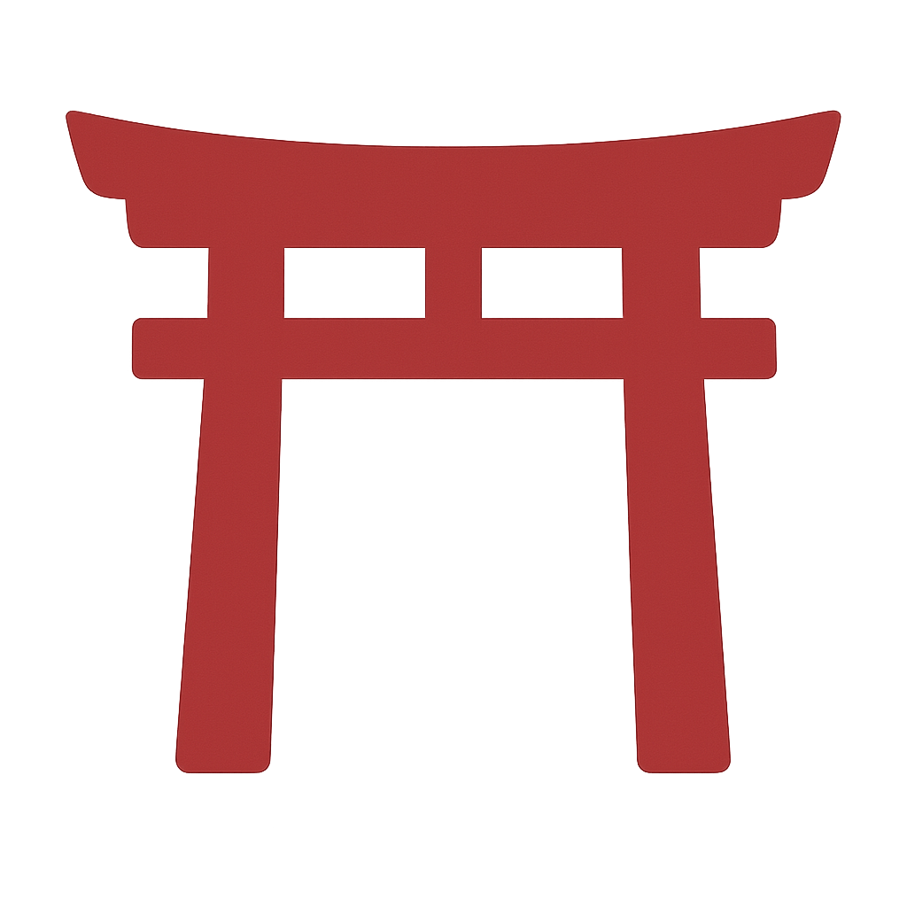

Tetsugaku no Michi – Il sentiero del Filosofo
Alla scoperta del Giappone spirituale e cerimoniale.
Pensato per chi desidera immergersi in templi, rituali e paesaggi di grande valore simbolico e meditativo. Un itinerario tra i luoghi dell’anima e le arti del vivere consapevole.
- Durata: da 8 a 18 notti
- Città visitabili: Kyoto, Nara, Kanazawa, Kurashiki, Okayama, Koyasan, Uji, Tokyo, Hakone, Kamakura
- Ideale per: chi ama templi, rituali e tradizione
A partire da 2.590€
Panoramica del viaggio
Come usare la mappa
- Clicca sui torii  per scoprire le tappe del viaggio
- Trascina per esplorare liberamente la mappa
- Usa lo zoom per avvicinarti alle zone locali
Cultura
Spiritualità
Natura
Esperienze
Gastronomia
Itinerario tipo – 12 notti
Mattina: Partenza con volo notturno per il Giappone.
Pomeriggio: Arrivo all’aeroporto Kansai e trasferimento in hotel a Kyoto.
Sera: Passeggiata lungo il fiume Kamo e cena in Pontocho.
Kamo River, Pontocho
Mattina: Visita a Ginkaku-ji e passeggiata lungo il Sentiero del Filosofo fino a Nanzen-ji.
Pomeriggio: Tempio Eikando e zona Higashiyama (pagoda Yasaka).
Sera: Cerimonia del tè con maestra del tè.
Ginkaku-ji, Nanzen-ji, Eikando, Yasaka-no-to
Mattina: Trasferimento a Nara: Todai-ji, Parco dei cervi, Kasuga Taisha.
Pomeriggio: Visita al tempio Byodo-in a Uji e degustazione di tè matcha.
Sera: Rientro a Kyoto e cena tipica.
Todai-ji, Kasuga Taisha, Byodo-in
Mattina: Visita a Ryoan-ji e al Padiglione d'Oro (Kinkaku-ji).
Pomeriggio: Quartiere Arashiyama: Tenryu-ji, foresta di bambù e ponte Togetsukyo.
Sera: Onsen serale o cena lungo il fiume.
Kinkaku-ji, Tenryu-ji, Foresta di bambù
Mattina: Partenza per Okayama: visita al Korakuen e al Castello Nero.
Pomeriggio: Spostamento a Himeji e visita al Castello (Patrimonio UNESCO) e giardini Koko-en.
Sera: Rientro a Kyoto e cena libera.
Korakuen, Castello di Himeji, Koko-en
Mattina: Partenza per Kanazawa con treno express.
Pomeriggio: Visita al Giardino Kenroku-en, Castello di Kanazawa, quartiere dei samurai.
Sera: Cena kaiseki nel quartiere di Higashi Chaya.
Kenroku-en, Castello, Nagamachi
Mattina: Gita in bus a Shirakawa-go, villaggio storico UNESCO.
Pomeriggio: Visita alla casa Wada-ke e al museo folcloristico.
Sera: Rientro a Kanazawa e passeggiata notturna a Higashi Chaya.
Shirakawa-go, Wada-ke, Museo folclore
Mattina: Museo D.T. Suzuki e Museo di Arte Contemporanea del 21° secolo.
Pomeriggio: Visita al mercato Omicho e alle vie storiche.
Sera: Cena in izakaya raffinato.
Museo D.T. Suzuki, Omicho, 21st Century Museum
Mattina: Shinkansen da Kanazawa a Tokyo.
Pomeriggio: Sistemazione in hotel ad Asakusa e visita a Senso-ji.
Sera: Vista panoramica dalla Tokyo Skytree e passeggiata lungo il Sumida.
Senso-ji, Tokyo Skytree, Sumida River
Mattina: Visita al Grande Buddha, Hase-dera e passeggiata nel centro storico.
Pomeriggio: Santuario Tsurugaoka e tramonto sulla costa di Enoshima.
Sera: Rientro a Tokyo e cena libera.
Daibutsu, Hase-dera, Tsurugaoka, Enoshima
Mattina: Museo all’aperto e funivia sul Lago Ashi.
Pomeriggio: Crociera panoramica e sosta in onsen.
Sera: Rientro a Tokyo e passeggiata notturna a Ueno o Shinjuku.
Hakone Open-Air Museum, Lago Ashi, Onsen
Trasferimento all’aeroporto e volo di rientro per l’Italia.
Itinerario tipo – su mappa
Come usare la mappa
- Clicca sui torii per scoprire le tappe del viaggio
- Trascina per esplorare liberamente la mappa
- Usa lo zoom per avvicinarti alle zone locali
I luoghi del viaggio Tetsugaku

- Alloggi centrali in categoria standard o superiore
- Voli andata/ritorno da principali aeroporti italiani
- Assicurazione medica, bagaglio e annullamento
- Guide digitali generali e tematiche in PDF
- Accesso gratuito al nostro travel assistant di viaggio
- Pasti e bevande
- Attività, ingressi o escursioni non specificati
- Servizi non espressamente indicati come inclusi
- Esperienza in ryokan tradizionale con cena kaiseki
- Onsen privati o naturali
- Guide locali per Tokyo o Kyoto
- Biglietti Ghibli Park o Shinkansen extra
I prezzi indicati si riferiscono al soggiorno minimo in bassa stagione.
Consigliamo di prenotare almeno 3–4 mesi prima per assicurarsi disponibilità, offerte e personalizzazione.